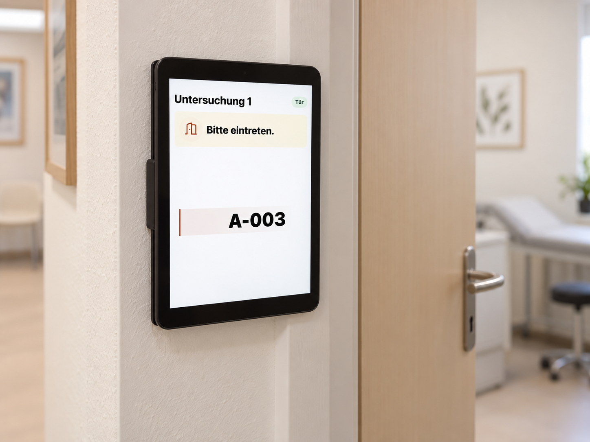
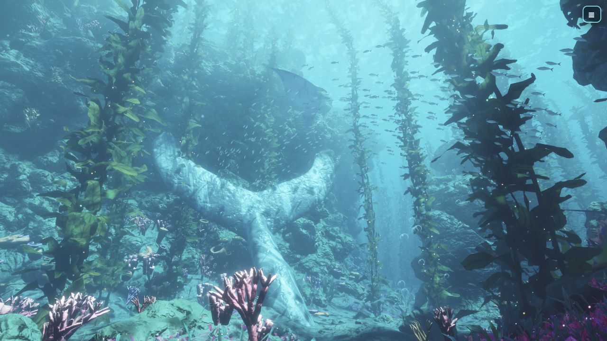
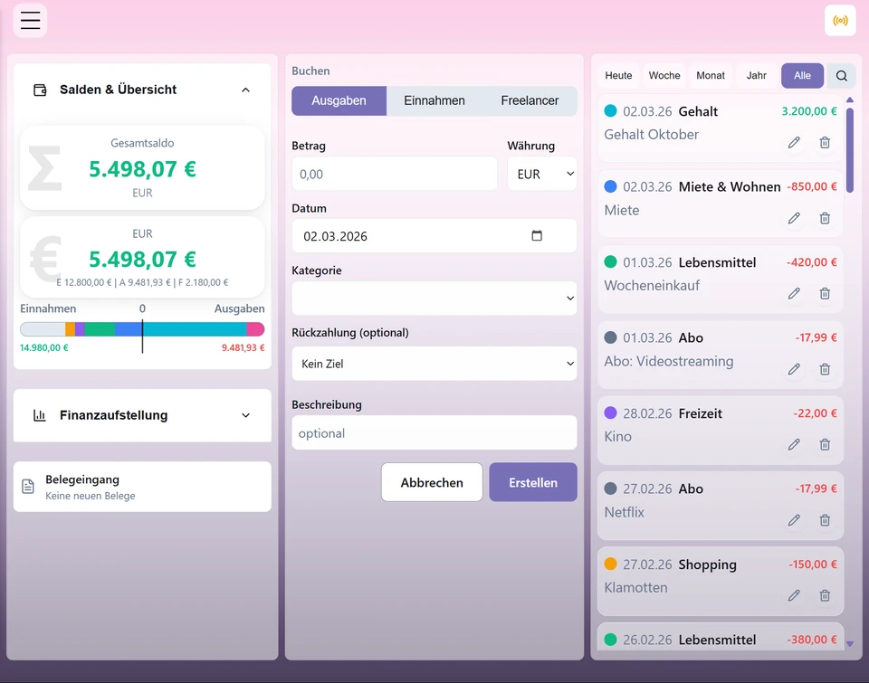
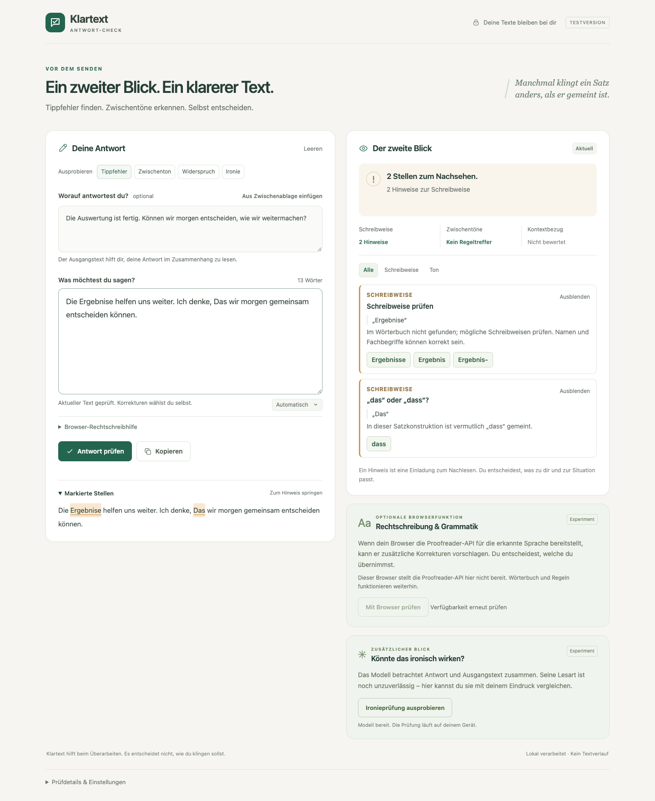
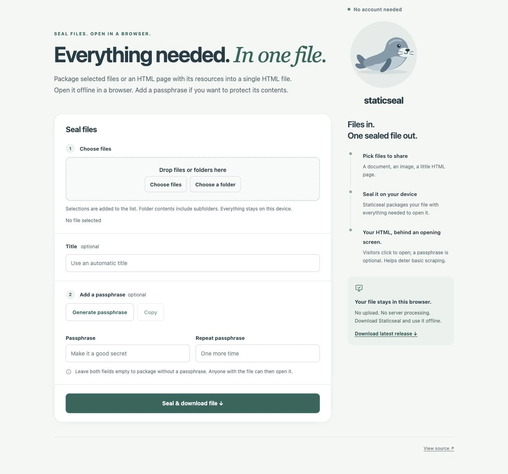
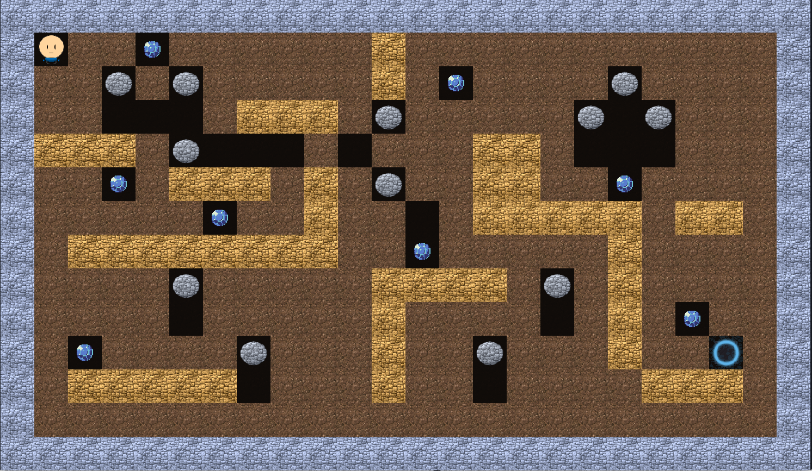
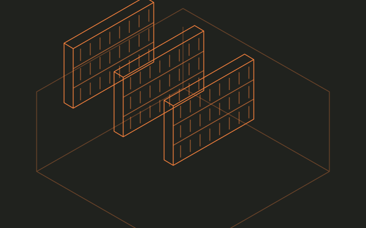

Wartezimmer
Von der Anmeldung bis zum Aufruf: Warteliste, Raumpanels und Patientenportal. Läuft lokal in der Praxis.
Client Concepts / nox-do
Was ich baue und ausprobiere. Software für den Praxisalltag, kleine Browser-Werkzeuge und gelegentlich eine ganze Unterwasserwelt.

Von der Anmeldung bis zum Aufruf: Warteliste, Raumpanels und Patientenportal. Läuft lokal in der Praxis.

Eine Unterwasserwelt zum freien Erkunden, in einer einzigen HTML-Datei. Mein erweiterter Fork des Originals von Maksymilian Dendura.

Einnahmen, Ausgaben, Budgets und Sparziele im Blick. Mit mehreren Währungen, offline nutzbar und ohne Pflicht-Account.

Ein zweiter Blick auf den eigenen Text. Konkrete Hinweise zum Überarbeiten, direkt im Browser.

Dateien in eine HTML-Datei packen und im Browser öffnen. Für Menschen zugänglich, für automatisches Auslesen eine Hürde.

Kisten schieben oder Diamanten sammeln: Sokoban und ein Boulder-Dash-artiges Höhlenspiel in einer nativen Mac-App.

Konzeptskizze / in ArbeitWissen einen Ort geben: die Idee einer begehbaren Bibliothekswelt, in der Mensch und KI gemeinsam sammeln, bauen und erinnern.
Eine erste statische Bibliotheksprobe in Luanti ist vorbereitet. Die Arbeit an Bauwerkzeugen und KI-Unterstützung steht noch aus. Es gibt derzeit keine öffentliche Demo.
Mehr über mich, meine Arbeit und die Projekte dahinter. Mit Referenzen und einem Ausflug ins Web von 1998.